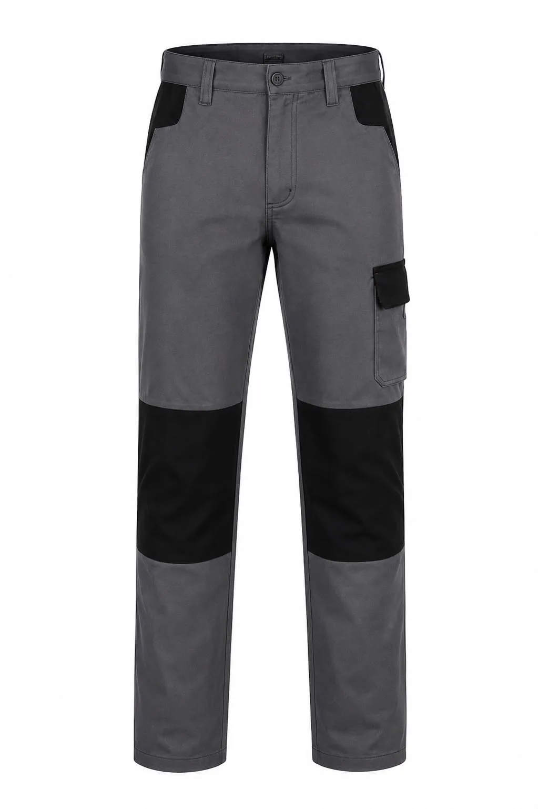

Kumaş
Adet, görev ve sezon planına göre sabit referansla onaylanan kumaş seçenekleri
Toptan iş elbisesi üretimi: minimum 50 adet, beden dağılımı, logo, numune, çoklu teslimat ve tekrar sipariş planıyla yazılı teklif alın.

Toptan iş elbisesi alımında ürün birim fiyatı tek başına yeterli karşılaştırma ölçütü değildir. Model kapsamı, kumaş referansı, beden dağılımı, logo uygulaması, paketleme, teslimat noktaları ve hedef tarih aynı teklif metninde açıkça tanımlanmalıdır.
Minimum sipariş özel üretimde 50 adettir. Birden fazla ürün veya departman içeren projelerde toplam kapsam üretilebilirlik açısından birlikte değerlendirilir. Kumaş gramajı ve karışımı, mevcut stok ve kullanım şartına göre fiziksel numune ya da kartela üzerinden onaylanır; yazılı onay olmadan eşdeğer malzeme varsayılmaz.
Çok şubeli yapılarda kolilerin şube, departman veya kişi koduyla ayrılması; teslimatın tek merkezden ya da planlı noktalardan yapılması teklif öncesinde belirlenir. Beden listesi pilot deneme veya numune setiyle doğrulandığında üretim sonrası değişim ve dağıtım yükü azalır.
Logo dosyası, ölçüsü, konumu ve uygulama yöntemi numuneye bağlanır. İlk siparişin model kodu ve teknik föyü saklanarak devam siparişlerinde tutarlılık korunur. Termin, onaylanan kapsam ve üretim yoğunluğu görüldükten sonra yazılı olarak bildirilir; gerçekçi olmayan sabit teslim süresi vaadi verilmez.
Toptan İş Elbisesi satın alımında teknik şartname hazırlanırken şu malzeme çerçevesi açıkça yazılmalıdır: Adet, görev ve sezon planına göre sabit referansla onaylanan kumaş seçenekleri. Bunun yanında toplu üretimde kritik ölçü ve dikiş noktaları için parti bazlı kalite kontrol ölçülebilir bir kabul noktası olarak numunede incelenir. Beden dağılımı yalnız çalışan sayısından çıkarılmaz; görevin hareket biçimi, ürünün alt veya üst katmanla giyilmesi ve vardiya boyunca ihtiyaç duyulan rahatlık da hesaba katılır. İlk siparişte onaylanan fiziksel numunenin ürün kodu, kumaş referansı, renk tonu ve aksesuar bilgileriyle saklanması; sonraki alımlarda farklı yorumların önüne geçer ve şubeler arasında ortak bir kıyafet standardı kurulmasını kolaylaştırır.
Fabrika, inşaat, lojistik, belediye, market, otel ve çok şubeli işletmeler için hazırlanan toptan iş elbisesi projelerinde kalite kontrol yalnız son görünüşe bırakılmaz. vardiya yoğunluğu, yıkama düzeni ve yenileme takvimine göre ürün planı üretim öncesi kararın merkezindedir; kesim ölçüsü, kritik dikişler, logo konumu ve paket içeriği aşamalı olarak takip edilir. Satın alma ekibi adet, çalışan görevleri, teslimat noktaları ve hedef tarihi teklif formunda paylaştığında gereksiz özellikler ayrıştırılabilir, gerekli işlevler ise yazılı kapsama alınabilir. Böylece tekliflerin aynı teknik temel üzerinden karşılaştırılması, beden değişimlerinin yönetilmesi ve yeni personel için devam siparişinin doğru modelden açılması mümkün olur. Üretim çözümü, yalnız ilk teslimatı değil ürünün kurum içindeki kullanım ve yenileme düzenini de destekleyecek biçimde planlanır.
Kesin teknik özellikler kullanım alanı, adet ve onaylanan numuneye göre belirlenir.
Adet, görev ve sezon planına göre sabit referansla onaylanan kumaş seçenekleri
Toplu üretimde kritik ölçü ve dikiş noktaları için parti bazlı kalite kontrol
Vardiya yoğunluğu, yıkama düzeni ve yenileme takvimine göre ürün planı
Ürün grubuna ve toplam adede göre nakış, baskı, transfer veya arma
Logo ve kumaş yüzeyine göre DTF, transfer veya serigrafi değerlendirmesi
Kurumsal kartela, garni ve aksesuarlarla proje bazlı renk planı
Tek bir genel ölçü değeri bütün kumaş ve kalıplara uygulanmaz. Teklifte kullanılacak ürünün ölçü tablosu numune aşamasında paylaşılır ve aşağıdaki kayıtlarla onaylanır.
Kesim, dikim, baskı, nakış ve kalite kontrol süreçleri Pendik'teki üretim yapımız içinde planlanır. Yıllık 1.000.000 adedin üzerindeki kapasite ve 300'den fazla kurumsal müşteri deneyimi hakkında doğrulanabilir işletme bilgilerini inceleyin.
Üretim tesisimizi ve ekibimizi tanıyın · Yayımlanmasına izin verilen referansları inceleyin
Fabrika, inşaat, lojistik, belediye, market, otel ve çok şubeli işletmeler. Her sektörün hareket, bakım, görünürlük ve kurumsal temsil beklentisi ayrı değerlendirilir.
Ürün standardı yazılı bilgi ve numune kararıyla oluşturulur.
Toplu satın alma öncesinde üretim, adet, kumaş ve logo kararları.
Özel üretimde minimum sipariş 50 adettir. Model, kumaş, renk, beden dağılımı ve logo uygulaması toplam proje kapsamında değerlendirilir.
Ürün grubuna ve toplam adede göre nakış, baskı, transfer veya arma. Uygulama yöntemi logo ayrıntısı, kumaş yüzeyi, renk ve bakım koşuluna göre numune aşamasında belirlenir.
Adet, görev ve sezon planına göre sabit referansla onaylanan kumaş seçenekleri. Kesin seçim çalışma ortamı, kullanım süresi, hareket yoğunluğu ve bakım düzeni görüldükten sonra yapılır.
Proje kapsamına göre numune planlanabilir. Numunede kalıp, beden, hareket, kumaş, aksesuar ve logo yerleşimi kontrol edilerek seri üretim ayrıntıları yazılı onaya bağlanır.
Kumaş ve aksesuar seçenekleri elverdiğinde kurum renkleri ana yüzey, garni, biye veya tamamlayıcı parçalarda uygulanabilir. Ton kararı fiziksel kartela ya da numune üzerinden doğrulanır.
Yaklaşık adet, görev ve sektör, beden dağılımı, tercih edilen model, renk, logo dosyası, teslimat şehri ve hedef tarih paylaşılırsa yazılı teklif kapsamı daha doğru hazırlanabilir.
Birlikte kullanılan ürün gruplarını aynı renk ve logo standardında planlayın.
Lokasyon bazlı planlama, teslimat ve kurumsal iş kıyafeti yaklaşımımızı inceleyin.
Adet, beden dağılımı, logo dosyası ve teslimat hedefinizi paylaşın; yazılı üretim kapsamını oluşturalım.